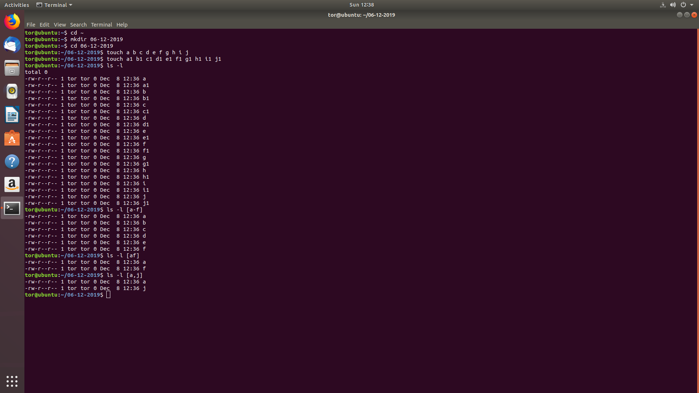
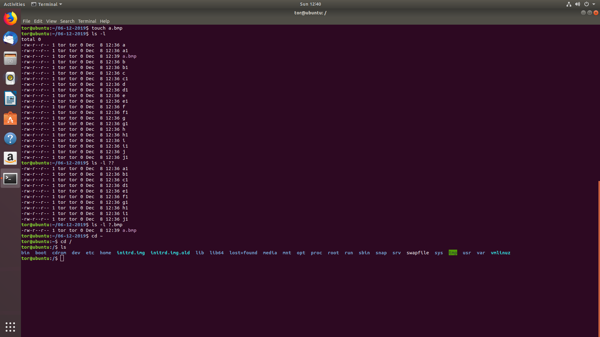
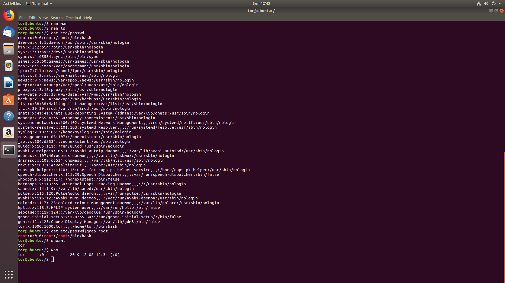
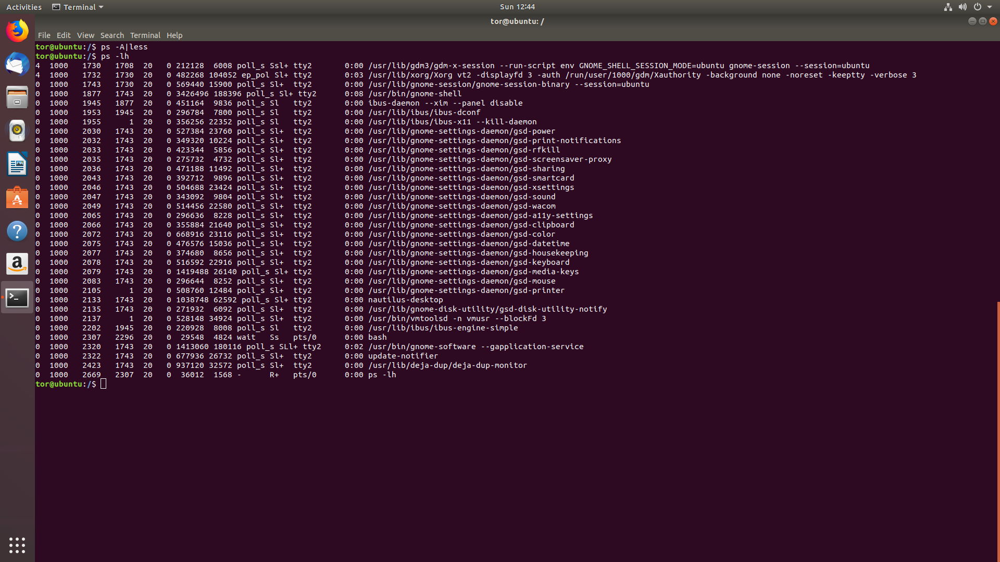

ls -l ?? - pokazuje pliki/foldery z nazwą o 2 znakach
ls -l ? - pokazuje pliki/foldery z nazwą o 1 znaku
ls -l ?.(rozszerzenie) - pokazuje pliki/foldery o danym rozszerzeniu
man – narzędzie służące do wyświetlania stron pomocy man, stosowane w systemach Unix i uniksopodobnych.
ps - program komputerowy konsoli Uniksa wyświetlający listę procesów aktualnie uruchomionych w systemie, do których użytkownik wykonujący ma dostęp.



